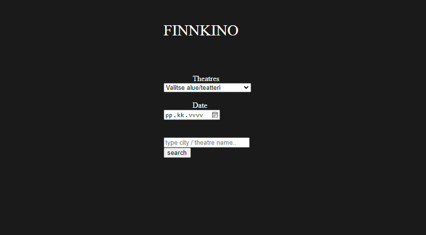

Front-end dev
Elämää miettinyt että se jatkuu kyllä front-end devauksen puolella, back-end devauksesta.
Tänä vuonna ollut vähän enemmän kiirettä kun viime vuonna ja oppinut enemmän mitä aikaisempana vuonna kun mainitsen että en olisi oppinut muuta.
Front-end devaukseen olen nyt kiinnittänyt huomiota että se on kyllä taito mitä pystyn käyttämään tulevaisuudessa, vaikka siihen ei löytyisi vakituista paikkaa suomesta, pystyn siihen tekemään freelance hommia
Ajankäyttö: 27h
Paransin myös lisäksi js-ajax tehtävän ulkonäköä ja käytettävyyttä kurssin päätyttä kun rupesin tutkimaan enemmän JS hommia
